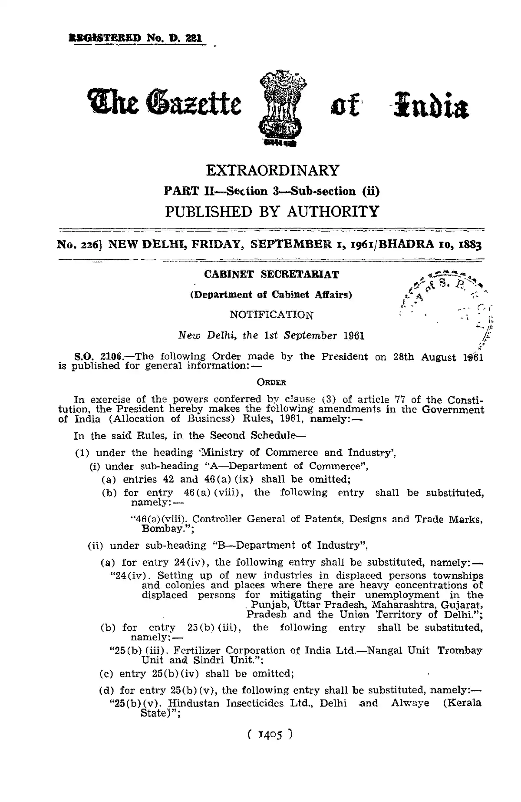
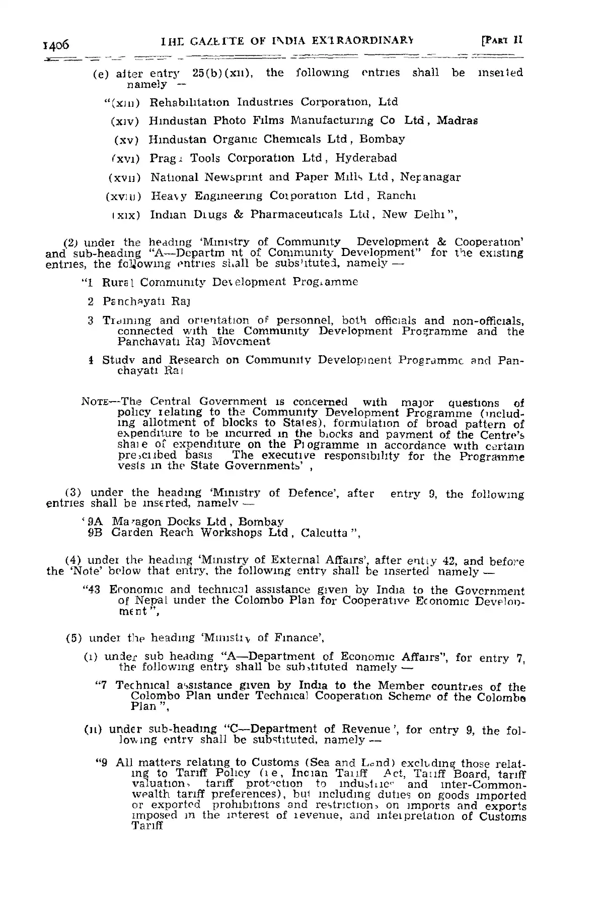
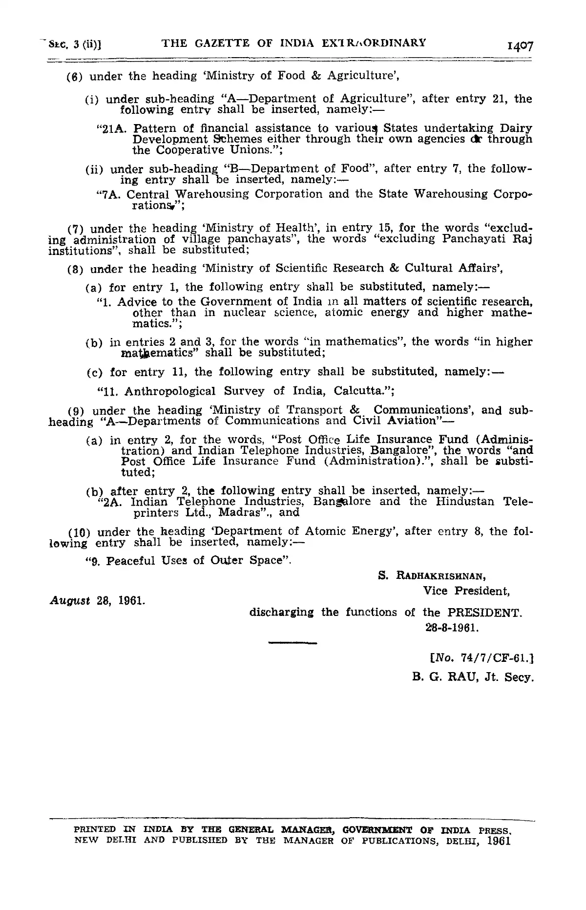

Amendment #3 (S.O. 2106, 1961)
21 changes: 0 to the First Schedule, 21 to the Second Schedule. 21 applied
What it did to the ministries
- shrankMinistry of Community Development & Cooperation shrinks from 10 to 4 subjects change 8 · histories: Community Development and Co-operation
The order, page by page
Page 1 of 4

123456Schedule 2 › Ministry of Commerce and Industry › Department of Commerce › entry 42; Schedule 2 › Ministry of Commerce and Industry › Department of Commerce › entry 46 › item a › item ix
applied at schedule 2 › ministry MINISTRY OF COMMERCE & INDUSTRY › department A › group_heading VIII › entry 42 in the Rules after #3
Schedule 2 › Ministry of Commerce and Industry › Department of Commerce › entry 46 › item a › item viii
- 46.
- a. (viii). Controller General of Patents, Designs and Trade Marks Bombay.
applied at schedule 2 › ministry MINISTRY OF COMMERCE & INDUSTRY › department A › group_heading IX, ALL MATTERS RELATING TO THE… in the Rules after #3
Schedule 2 › Ministry of Commerce and Industry › Department of Industry › entry 24 › item iv
- 24 (iv). Setting up of new industries in displaced persons townships and colonies and places where there are heavy concentrations of displaced persons for mitigating their unemployment in the Punjab, Uttar Pradesh, Maharashtra, Gujarat Pradesh and the Union Territory of Delhi.
applied at schedule 2 › ministry MINISTRY OF COMMERCE & INDUSTRY › department B › group_heading IV › entry 24 › item iv in the Rules after #3
Schedule 2 › Ministry of Commerce and Industry › Department of Industry › entry 25 › item b › item iii
- 25.
- b. (iii). Fertilizer Corporation of India Ltd.—Nangal Unit Trombay Unit and Sindri Unit.
applied at schedule 2 › ministry MINISTRY OF COMMERCE & INDUSTRY › department B › group_heading V › entry 25 › item b › item iii in the Rules after #3
Schedule 2 › Ministry of Commerce and Industry › Department of Industry › entry 25 › item b › item iv
applied at schedule 2 › ministry MINISTRY OF COMMERCE & INDUSTRY › department B › group_heading V › entry 25 › item b › item iv in the Rules after #3
Schedule 2 › Ministry of Commerce and Industry › Department of Industry › entry 25 › item b › item v
- 25.
- b. (v). Hindustan Insecticides Ltd., Delhi and Alwaye (Kerala State)
applied at schedule 2 › ministry MINISTRY OF COMMERCE & INDUSTRY › department B › group_heading V › entry 25 › item b › item v in the Rules after #3
Page 2 of 4

789101112after Schedule 2 › Ministry of Commerce and Industry › Department of Industry › entry 25 › item b › item x
- xi. Rehabilitation Industries Corporation, Ltd
- xiv. Hindustan Photo Films Manufacturing Co Ltd, Madras
- xv. Hindustan Organic Chemicals Ltd, Bombay
- xvi. Prag 1 Tools Corporation Ltd, Hyderabad
- xv. National Newsprint and Paper Mills Ltd, Nepanagar
- xv. Heavy Engineering Corporation Ltd, Ranchi (XIX) Indian Diugs & Pharmaceuticals Ltd, New Delhi
applied at schedule 2 › ministry MINISTRY OF COMMERCE & INDUSTRY › department B › group_heading V › entry 25 › item b › item xi in the Rules after #3
Schedule 2 › Ministry of Community Development & Cooperation › Department of Community Development
- 1 Rural Community Development Prog.amme 2 Panchayati Raj 3 Training and orientation of personnel, both officials and non-officials connected with the Community Development Programme and the Panchavati Raj Movement 4 Study and Research on Community Developinent Programme and Panchayati Ra
- NOTE The Central Government is concerned with major questions of policy relating to the Community Development Programme (including allotment of blocks to States), formulation of broad pattern of expenditure to be incurred in the blocks and payment of the Centre's share of expenditure on the…
applied at schedule 2 › ministry MINISTRY OF COMMUNITY DEVELOPMENT & COOPERATION › department A in the Rules after #3
after Schedule 2 › Ministry of Defence › entry 9
- 9A Mazagon Docks Ltd, Bombay 9B Garden Reach Workshops Ltd, Calcutta
applied at schedule 2 › ministry MINISTRY OF DEFENCE › entry 9 in the Rules after #3
after Schedule 2 › Ministry of External Affairs › entry 42
- 43 Economic and technical assistance given by India to the Government of Nepal under the Colombo Plan for Cooperative Economic Develonment
applied at schedule 2 › ministry MINISTRY OF EXTERNAL AFFAIRS › entry 42 in the Rules after #3
Schedule 2 › Ministry of Finance › Department of Economic Affairs › entry 7
- 7 Technical assistance given by India to the Member countries of the Colombo Plan under Technical Cooperation Scheme of the Colombo Plan
applied at schedule 2 › ministry MINISTRY OF FINANCE › department A › group_heading II › entry 7 in the Rules after #3
Schedule 2 › Ministry of Finance › Department of Revenue › entry 9
- 9 All matters relating to Customs (Sea and Land) excluding those relating to Tariff Policy (ie, Indian Tauff Act, Tauff Board, tariff valuation, tariff protection to industues and inter-Commonwealth tariff preferences), but including duties on goods imported or exported prohibitions and…
applied at schedule 2 › ministry MINISTRY OF FINANCE › department C › entry 9 in the Rules after #3
Page 3 of 4

131415161718192021after Schedule 2 › Ministry of Food & Agriculture › Department of Agriculture › entry 21
- 21A. Pattern of financial assistance to various States undertaking Dairy Development Schemes either through their own agencies or through the Cooperative Unions.
applied at schedule 2 › ministry MINISTRY OF FOOD AND AGRICULTURE › department A › part II › entry 21A in the Rules after #3
after Schedule 2 › Ministry of Food & Agriculture › Department of Food › entry 7
- 7A. Central Warehousing Corporation and the State Warehousing Corporations
applied at schedule 2 › ministry MINISTRY OF FOOD AND AGRICULTURE › department B › group_heading I › entry 7A in the Rules after #3
Schedule 2 › Ministry of Health › entry 15
for “exclud- ing administration of village panchayats” read “excluding Panchayati Raj institutions”
applied at schedule 2 › ministry MINISTRY OF HEALTH › group_heading II › entry 15 in the Rules after #3
Schedule 2 › Ministry of Scientific Research & Cultural Affairs › entry 1
- 1. Advice to the Government of India in all matters of scientific research other than in nuclear science, atomic energy and higher mathematics.
applied at schedule 2 › ministry MINISTRY OF SCIENTIFIC RESEARCH AND CULTURAL AFFAIRS. › entry 1 in the Rules after #3
Schedule 2 › Ministry of Scientific Research & Cultural Affairs › entry 2; Schedule 2 › Ministry of Scientific Research & Cultural Affairs › entry 3
for “in mathematics” read “in higher mathematics”
applied at schedule 2 › ministry MINISTRY OF SCIENTIFIC RESEARCH AND CULTURAL AFFAIRS. › entry 2 in the Rules after #3
Schedule 2 › Ministry of Scientific Research & Cultural Affairs › entry 11
- 11. Anthropological Survey of India, Calcutta.
applied at schedule 2 › ministry MINISTRY OF SCIENTIFIC RESEARCH AND CULTURAL AFFAIRS. › entry 11 in the Rules after #3
Schedule 2 › Ministry of Transport & Communications › Departments of Communications and Civil Aviation › entry 2
for “Post Office Life Insurance Fund (Adminis- tration) and Indian Telephone Industries, Bangalore” read “and Post Office Life Insurance Fund (Administration).”
applied at schedule 2 › ministry MINISTRY OF TRANSPORT & COMMUNICATIONS › department A › entry 2 in the Rules after #3
states inferred loose
after Schedule 2 › Ministry of Transport & Communications › Departments of Communications and Civil Aviation › entry 2
- 2A. Indian Telephone Industries, Bangalore and the Hindustan Teleprinters Ltd., Madras
applied at schedule 2 › ministry MINISTRY OF TRANSPORT & COMMUNICATIONS › department A › entry 2A in the Rules after #3
states inferred loose
after Schedule 2 › Department of Atomic Energy › entry 8
- 9. Peaceful Uses of Outer Space
applied at schedule 2 › ministry DEPARTMENT OF ATOMIC ENERGY › entry 9 in the Rules after #3
Page 4 of 4
How this document was read
Changes placed by an inference rule
| Change | Rule | Status | What |
|---|---|---|---|
| 19 | loose | accepted | change 19: department Departments of Communications and Civil Aviation taken for department DEPARTMENT OF COMMUNICATIONS AND CIVIL AVIATION, named loosely |
| 20 | loose | accepted | change 20: department Departments of Communications and Civil Aviation taken for department DEPARTMENT OF COMMUNICATIONS AND CIVIL AVIATION, named loosely |
From the Government of India (Allocation of Business) Rules, 1961 and their amendments, as published by the Cabinet Secretariat (cabsec.gov.in), read by orgpedia. The readings of the older scanned gazettes have known gaps.